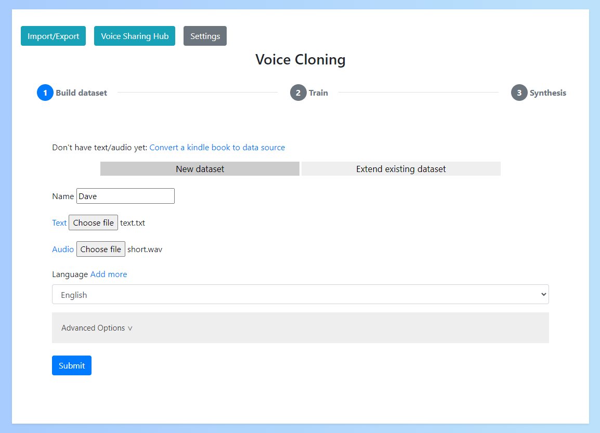

Welcome to the Voice Cloning App
A Python/Pytorch app for easily synthesising human voices.
Getting started
After installing & running the app it should open in your browser at localhost:5000

Windows
Download the latest release from releases
- If you have an NVIDIA GPU make sure to download the executable with GPU support
- Otherwise, download the 'cpuonly' version
Linux
- Clone this repository
- Run
./install.shfrom the root of the repository - Run
python3.6 main.py
Manual Install (Linux/ Windows)
Users familiar with Python may prefer building the app themselves:
- Clone this repository
- Install Python (version 3.6)
- Run
pip install -r requirements.txt- (or
pip install -r requirements-cpu.txtfor the 'cpuonly' build)
- (or
- Run
python main.py
Adding languages
If you are using a language other than English you can add it to the app.
Firstly, you'll need to find a deepspeech model for your language by going to coqui.
You'll then need to download the model.pbmm and alphabet.txt files for your language.
To add this to the app go to "Settings" -> "Add a language", enter your language name and upload your language files

Please note that language model quality may vary and so successful generation of voices in other languages is not guarenteed.